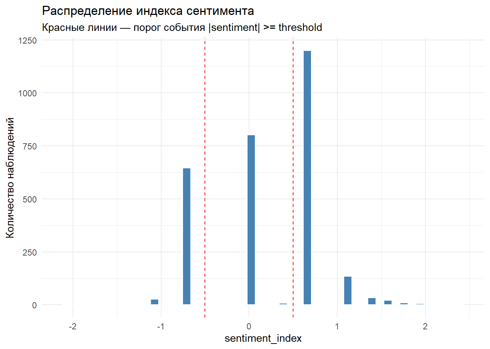
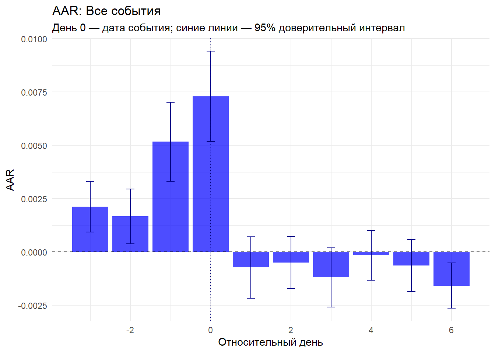
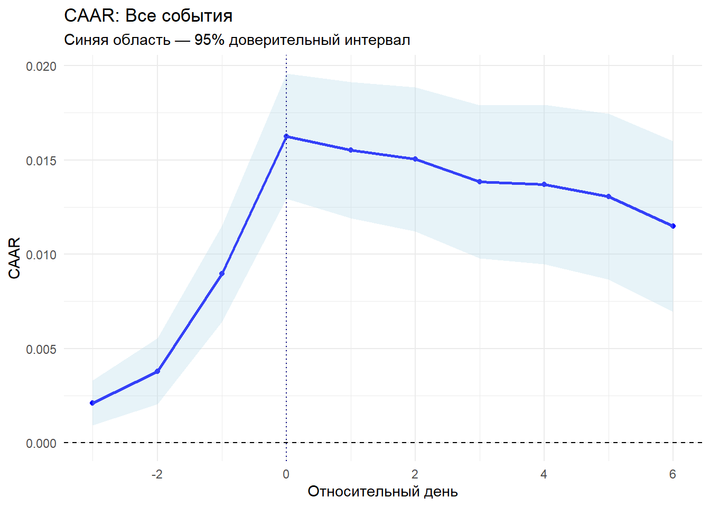
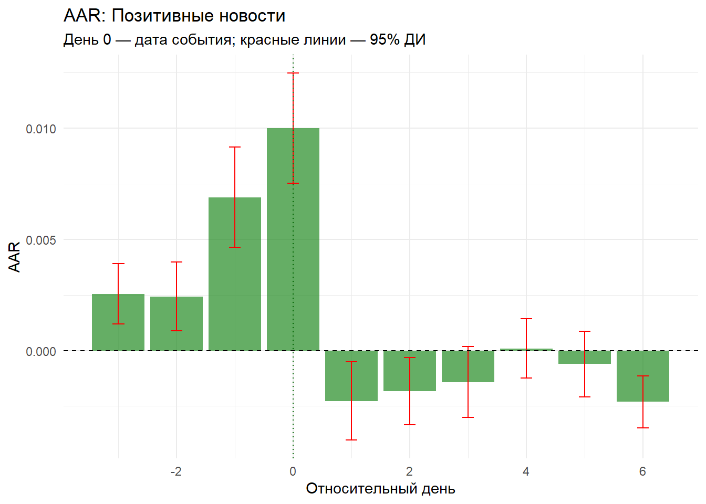
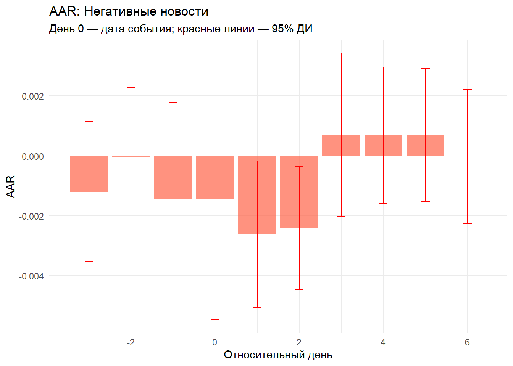
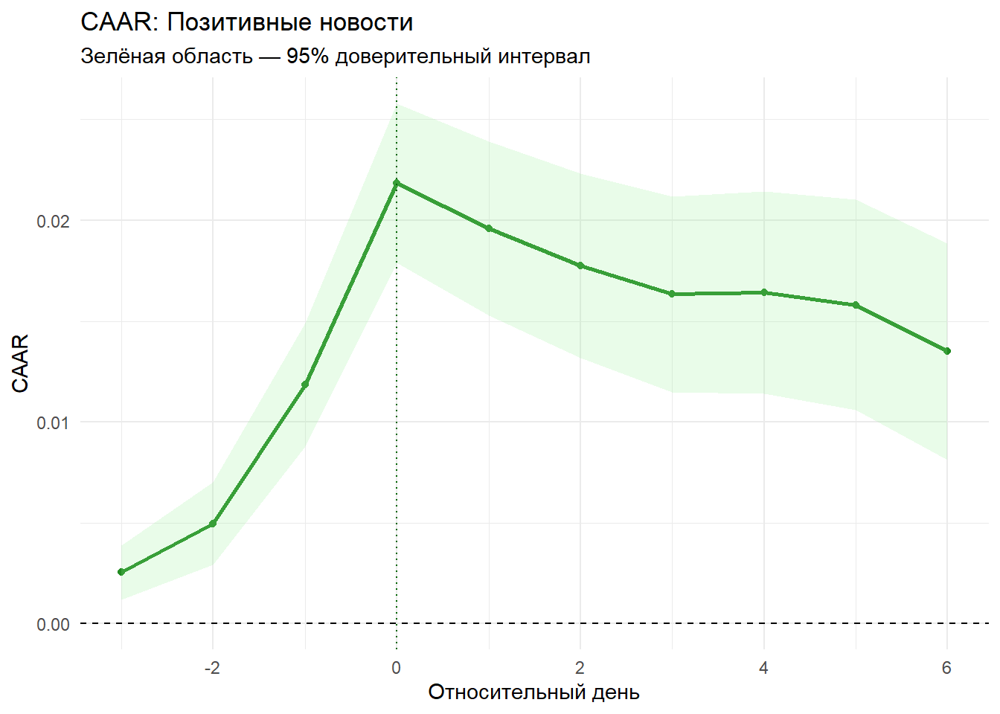
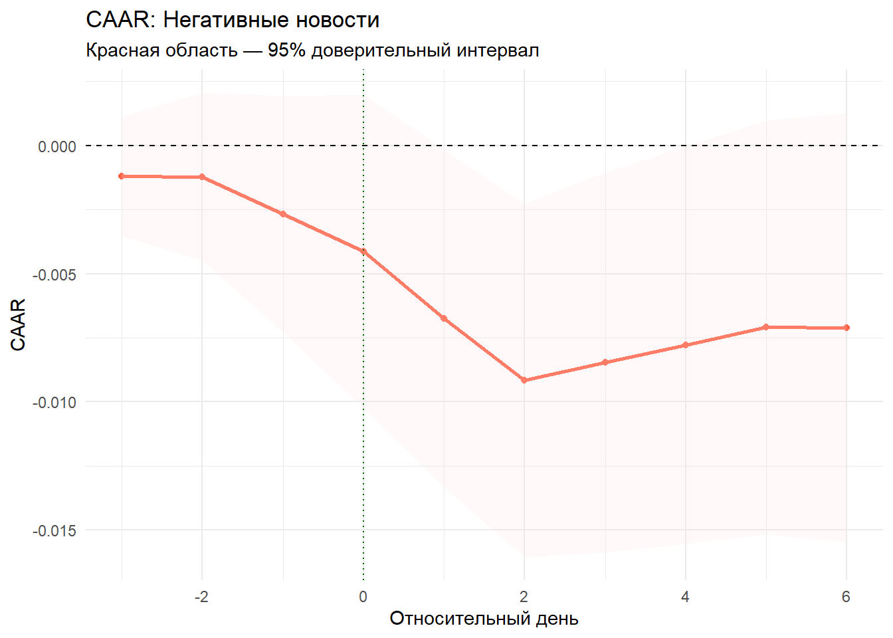
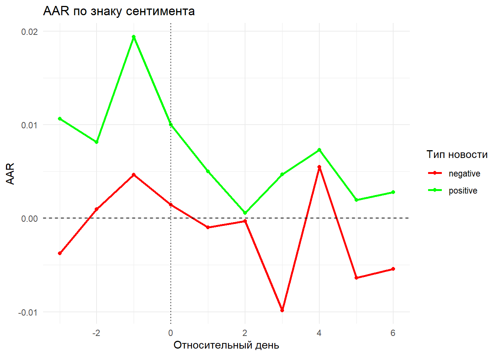
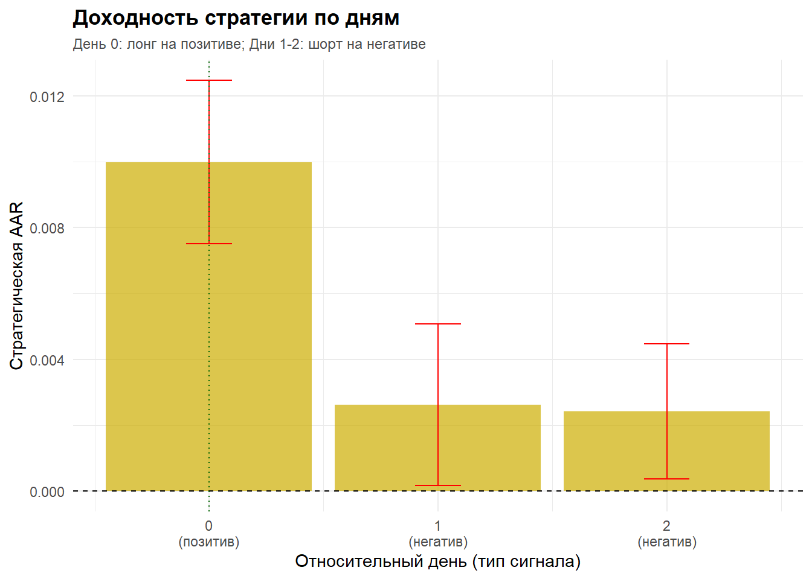
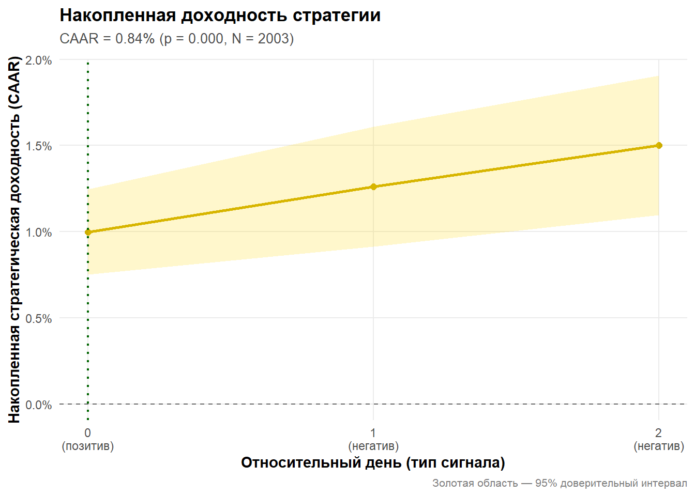

library(here)
library(dplyr)
library(ggplot2)06_event_study
Загрузка и настройка
Импорты библиотек
Тикеры для исключения
stop_tickers <- c(
'RBCM', # РБК - часто упоминается, как новостной канал
'VEON-RX',
'UWGN',
'MGNZ'
)Переменные
Мы оцениваем параметры рыночной модели (\(\alpha\) и \(\beta\)) на исторических данных до события (est_windows).
threshold <- 0.5 # порог сентимента (минимум 1 положительная новость без отрицательных)
est_window <- c(-63, -4) # размер окна оценки
min_est_obs <- 30 # минимальное количество наблюдений для оценки доходности
event_window <- c(-3, 6) # размер окна событияЗагрузка информации
# Загружаем сентимент
sentiment <- readr::read_rds(here("data", "processed", "sentiment_fav.rds"))
# Загружаем уровни листинга
securities_listing <- readr::read_rds(here("data", "processed", "securities_listing.rds"))
# Загружаем котировки, объёмы и спред
quotes_spread <- readr::read_rds(here("data", "processed", "quotes_spread.rds"))
# Загружаем статистику по акциям
securities_stats <- readr::read_rds(here("data", "processed", "securities_stats.rds"))
# Загружаем статистику по акциям
market_params <- readr::read_rds(here("data", "processed", "market_params.rds"))Выбираем тикеры, для которых есть вся информация
tickers_sent <- names(sentiment)[-1]
print(paste("Тикеров имеют значения сентимента: ", length(tickers_sent)))[1] "Тикеров имеют значения сентимента: 188"tickers_sent_2_and_more <- names(sentiment |>
select(where(
~ sum(!is.na(.x)) > 1 |
max(.x, na.rm = T) > threshold |
min(.x, na.rm = T) < -threshold)
)
)
print(paste("Тикеров фигурировало хотя бы в двух сообщениях: ", length(tickers_sent_2_and_more)))[1] "Тикеров фигурировало хотя бы в двух сообщениях: 184"tickers_quotes <- names(quotes_spread)
print(paste("Тикеров имеют котировки: ", length(tickers_quotes)))[1] "Тикеров имеют котировки: 259"tickers_listing_23 <- securities_listing |>
filter(listing %in% c(2, 3)) |>
pull(ticker)
print(paste("Тикеров 2 и 3 уровня листинга: ", length(tickers_listing_23)))[1] "Тикеров 2 и 3 уровня листинга: 190"tickers_min_volume <- securities_stats |>
filter(value_share <= 0.005) |>
pull(ticker)
print(paste("Тикеров с объёмом торгов до 0,5% от биржевого: ", length(tickers_min_volume)))[1] "Тикеров с объёмом торгов до 0,5% от биржевого: 223"tickers <- Reduce(intersect, list(tickers_sent, tickers_sent_2_and_more, tickers_quotes, tickers_listing_23, tickers_min_volume))
tickers <- setdiff(tickers, stop_tickers)
print(paste("Тикеров для анализа: ", length(tickers)))[1] "Тикеров для анализа: 111"sentiment <- select(sentiment, all_of(c('date', tickers)))
quotes_spread <- quotes_spread[names(quotes_spread) %in% tickers]
print(paste("Оставленные тикеры: ", toString(tickers)))[1] "Оставленные тикеры: BAZA, MRKK, LIFE, DATA, ELMT, NAUK, BANE, VSMO, IVAT, ETLN, MRKP, MRKV, RGSS, DELI, ZILL, USBN, IRKT, NMTP, KMAZ, RASP, APTK, TRMK, SVET, UNAC, GCHE, NKNC, ABRD, RKKE, KLVZ, APRI, ZVEZ, ROST, SPBE, CNTL, AKRN, LNZL, CHGZ, OGKB, KOGK, UKUZ, KZOS, NKSH, TTLK, WTCM, PRMB, MRKS, VJGZ, SVAV, UTAR, GTRK, GEMA, MGTS, GECO, FESH, MSRS, LSNG, AVAN, BRZL, KAZT, UGLD, HIMCP, MRKC, TGKB, SAGO, SOFL, MRKZ, DVEC, MRKU, YKEN, NNSB, TNSE, KRKN, MISB, NFAZ, YAKG, NSVZ, ROLO, ASSB, GAZA, AMEZ, CARM, KFBA, EELT, KMEZ, ABIO, WUSH, ARSA, MSTT, KROT, KLSB, KBSB, CHMK, NKHP, TGKN, GLRX, MAGE, HNFG, MGKL, ZAYM, DIAS, TUZA, DZRD, KGKC, PRMD, LMBZ, OMZZP, PRFN, RTGZ, KUZB, MRSB, JNOS"Удаляем промежуточные переменные
rm(tickers_sent_2_and_more, tickers_listing_23, tickers_min_volume, tickers_quotes, tickers_sent)
rm(securities_listing, securities_stats)Считаем статистики по сентименту в разрезе компаний
sentiment_stats <- sapply(sentiment[-1], function(x) {
c(
count = sum(!is.na(x)),
min = min(x, na.rm = TRUE),
max = max(x, na.rm = TRUE),
mean = mean(x, na.rm = TRUE),
median= median(x, na.rm = TRUE)
)
}) |> t() |> as.data.frame()
sentiment_stats[rownames(sentiment_stats) %in% tickers, ] |>
arrange(desc(count)) count min max mean median
ELMT 357 -1.0986123 1.0986123 0.08414816 0.0000000
BAZA 188 -1.0986123 1.0986123 -0.05836474 0.0000000
IVAT 188 -1.0986123 1.3862944 -0.01843477 0.0000000
SPBE 166 -1.6094379 0.6931472 -0.14331414 0.0000000
SOFL 138 -0.6931472 2.3978953 0.53635837 0.6931472
ETLN 126 -1.0986123 1.9459101 0.34053382 0.6931472
BANE 119 -1.0986123 1.6094379 0.19266472 0.0000000
KMAZ 110 -1.0986123 1.7917595 0.22898968 0.6931472
FESH 110 -0.6931472 1.6094379 0.35988825 0.6931472
DELI 109 -0.6931472 1.6094379 0.36716829 0.6931472
WUSH 103 -1.6094379 1.7917595 0.31732434 0.0000000
DATA 90 -0.6931472 1.0986123 0.32027222 0.6931472
RASP 90 -0.6931472 1.6094379 -0.00841873 0.0000000
UGLD 79 -2.0794415 1.0986123 0.02801232 0.0000000
NMTP 71 -1.0986123 1.9459101 0.28101392 0.6931472
LIFE 64 -0.6931472 1.7917595 0.21395382 0.0000000
TRMK 64 -0.6931472 1.0986123 0.17512716 0.6931472
ABRD 63 -0.6931472 1.7917595 0.36494667 0.6931472
AKRN 62 -1.0986123 1.0986123 0.26367500 0.6931472
MRKK 59 -0.6931472 1.0986123 -0.12235854 0.0000000
ABIO 59 -0.6931472 2.1972246 0.49344593 0.6931472
IRKT 58 -1.0986123 0.6931472 -0.13348969 0.0000000
APRI 54 -0.6931472 0.6931472 0.03850818 0.0000000
GECO 53 -0.6931472 1.6094379 0.38792411 0.6931472
KAZT 51 -0.6931472 1.9459101 0.60185445 0.6931472
ZAYM 51 -1.0986123 2.0794415 0.36362892 0.6931472
ZVEZ 50 -1.0986123 1.0986123 0.06356108 0.0000000
MGKL 50 -0.6931472 1.0986123 0.47161110 0.6931472
DIAS 50 -1.0986123 1.0986123 0.12476649 0.0000000
GCHE 47 -0.6931472 1.0986123 0.21509629 0.0000000
NKNC 47 -0.6931472 1.7917595 0.56870872 0.6931472
SVAV 43 -1.0986123 1.0986123 0.39235113 0.6931472
UNAC 42 -0.6931472 1.0986123 0.05916444 0.0000000
HNFG 40 -0.6931472 1.3862944 0.33218949 0.6931472
NAUK 34 -0.6931472 0.6931472 -0.02038668 0.0000000
VSMO 34 -1.0986123 0.6931472 -0.09347217 0.0000000
CARM 33 -1.0986123 1.0986123 0.32735372 0.6931472
KLSB 33 -1.0986123 1.0986123 -0.29763162 -0.6931472
PRMD 33 -0.6931472 1.0986123 0.46051885 0.6931472
KZOS 32 -0.6931472 1.9459101 0.53997388 0.6931472
KLVZ 31 -0.6931472 1.0986123 0.22739532 0.0000000
MRKC 30 -0.6931472 2.1972246 0.55414128 0.6931472
APTK 28 -0.6931472 1.0986123 0.08874667 0.3465736
UKUZ 27 -1.0986123 0.6931472 -0.29741052 -0.6931472
OGKB 22 -0.6931472 1.3862944 0.25740729 0.6931472
NKHP 22 -0.6931472 0.6931472 0.18904014 0.3465736
KBSB 21 -1.0986123 0.6931472 -0.58042701 -0.6931472
MRKP 20 -1.0986123 1.6094379 0.32307341 0.3465736
CNTL 20 -0.6931472 0.6931472 0.03465736 0.0000000
MSRS 20 -0.6931472 1.9459101 0.53934622 0.6931472
LSNG 20 -0.6931472 1.0986123 0.15890269 0.0000000
AVAN 19 -0.6931472 0.6931472 0.03648143 0.0000000
SVET 18 -0.6931472 0.6931472 -0.19254088 0.0000000
GEMA 17 -0.6931472 1.0986123 0.43158452 0.6931472
GLRX 17 -0.6931472 0.6931472 0.48928036 0.6931472
LNZL 16 -0.6931472 0.6931472 0.04332170 0.0000000
ROLO 16 -0.6931472 1.3862944 0.46592000 0.6931472
AMEZ 16 -1.0986123 1.3862944 0.34657359 0.6931472
TGKN 15 -0.6931472 0.6931472 0.23104906 0.6931472
ZILL 14 -0.6931472 1.0986123 0.02896179 0.0000000
MRKV 12 -0.6931472 1.3862944 0.23104906 0.3465736
PRMB 12 -0.6931472 0.6931472 -0.11552453 -0.6931472
RGSS 11 -0.6931472 1.0986123 0.16288722 0.0000000
RKKE 11 -0.6931472 0.6931472 0.37808028 0.6931472
TGKB 11 -0.6931472 0.6931472 0.31506690 0.6931472
MRKU 10 -0.6931472 1.6094379 0.65792512 0.6931472
TTLK 9 -0.6931472 1.3862944 0.53911447 0.6931472
UTAR 9 -0.6931472 0.6931472 -0.30806541 -0.6931472
GTRK 9 -0.6931472 1.9459101 0.37024495 0.6931472
MRKZ 9 0.0000000 2.1972246 0.93011230 0.6931472
NFAZ 9 0.6931472 1.3862944 0.79495726 0.6931472
ASSB 9 -0.6931472 0.6931472 -0.30806541 -0.6931472
GAZA 9 -0.6931472 0.6931472 0.07701635 0.0000000
YAKG 8 -0.6931472 0.6931472 0.00000000 0.0000000
TUZA 8 0.6931472 1.6094379 0.94501006 0.6931472
NKSH 7 0.0000000 1.0986123 0.41291025 0.0000000
MRKS 7 -0.6931472 0.6931472 0.19804205 0.6931472
KMEZ 7 -0.6931472 0.6931472 -0.05792359 0.0000000
MSTT 6 0.0000000 0.6931472 0.23104906 0.0000000
RTGZ 6 0.0000000 1.0986123 0.59725316 0.6931472
KRKN 5 -0.6931472 0.6931472 0.13862944 0.6931472
MISB 5 -0.6931472 0.6931472 0.13862944 0.0000000
EELT 5 0.6931472 1.6094379 1.11968439 1.0986123
ARSA 5 0.0000000 0.6931472 0.27725887 0.0000000
KGKC 5 -0.6931472 0.0000000 -0.41588831 -0.6931472
USBN 4 0.0000000 0.0000000 0.00000000 0.0000000
WTCM 4 -0.6931472 0.6931472 0.17328680 0.3465736
BRZL 4 -0.6931472 0.6931472 0.10136628 0.2027326
HIMCP 4 -0.6931472 0.6931472 -0.07192052 -0.1438410
LMBZ 4 0.0000000 1.0986123 0.44793987 0.3465736
KOGK 3 0.0000000 1.0986123 0.59725316 0.6931472
VJGZ 3 0.0000000 0.6931472 0.46209812 0.6931472
MGTS 3 -0.6931472 0.6931472 0.23104906 0.6931472
TNSE 3 0.6931472 0.6931472 0.69314718 0.6931472
KFBA 3 0.0000000 0.6931472 0.46209812 0.6931472
KROT 3 -0.6931472 0.6931472 0.00000000 0.0000000
MAGE 3 -0.6931472 0.6931472 0.23104906 0.6931472
DZRD 3 0.0000000 0.6931472 0.23104906 0.0000000
ROST 2 -0.6931472 1.0986123 0.20273255 0.2027326
SAGO 2 -0.6931472 0.6931472 0.00000000 0.0000000
CHMK 2 -0.6931472 -0.6931472 -0.69314718 -0.6931472
OMZZP 2 0.0000000 0.6931472 0.34657359 0.3465736
PRFN 2 0.0000000 0.0000000 0.00000000 0.0000000
CHGZ 1 0.6931472 0.6931472 0.69314718 0.6931472
DVEC 1 0.6931472 0.6931472 0.69314718 0.6931472
YKEN 1 0.6931472 0.6931472 0.69314718 0.6931472
NNSB 1 0.6931472 0.6931472 0.69314718 0.6931472
NSVZ 1 0.6931472 0.6931472 0.69314718 0.6931472
KUZB 1 0.6931472 0.6931472 0.69314718 0.6931472
MRSB 1 -0.6931472 -0.6931472 -0.69314718 -0.6931472
JNOS 1 -0.6931472 -0.6931472 -0.69314718 -0.6931472openxlsx::write.xlsx(sentiment_stats, here("output", "tables", "sentiment_stats.xlsx"), rowNames = TRUE)Удаляем промежуточные переменные
rm(sentiment_stats)Подготавливаем данные
Собираем всё в один датафрейм
sentiment_long_df <- sentiment |>
tidyr::pivot_longer(
cols = -date,
names_to = "ticker",
values_to = "sentiment_index"
) |>
arrange(ticker, date)
quotes_df <- bind_rows(quotes_spread, .id = "ticker") |>
arrange(ticker, date) |>
group_by(ticker) |>
mutate(
volume_rel = value / median(value, na.rm = TRUE),
volume_rel = ifelse(is.infinite(volume_rel) | is.na(volume_rel), 0, volume_rel)
) |>
ungroup() |>
select(
ticker,
date,
ret,
volume_abs = value,
volume_rel,
spread = spread_bbo,
)
market_params <- market_params |>
select(date, market_return = ret_moexbmi)
es_data <- quotes_df |>
left_join(market_params, by = "date") |>
full_join(sentiment_long_df, by = c("ticker", "date"))|>
filter(!is.na(ticker)) |>
filter(!if_all(c(ret, sentiment_index), is.na)) |>
arrange(ticker, date)Пример подготовленных данных
es_data |> tidyr::drop_na() |> head(10)# A tibble: 10 × 8
ticker date ret volume_abs volume_rel spread market_return
<chr> <date> <dbl> <dbl> <dbl> <dbl> <dbl>
1 ABIO 2023-08-21 0.0246 90348800 5.70 16.2 0.00972
2 ABIO 2023-11-30 -0.00270 8069807. 0.509 14.6 -0.00257
3 ABIO 2023-12-29 0 21015556. 1.33 13.2 -0.00100
4 ABIO 2024-01-16 -0.00756 73388847. 4.63 8.8 -0.00167
5 ABIO 2024-01-17 0.0225 81038189 5.12 9.2 0.00266
6 ABIO 2024-01-18 0.0289 326996696 20.6 9.75 -0.00152
7 ABIO 2024-01-23 -0.0135 302526130. 19.1 8.95 0.000945
8 ABIO 2024-02-01 -0.0140 132910264. 8.39 9 0.00404
9 ABIO 2024-02-12 0.0171 84740826. 5.35 8 0.00209
10 ABIO 2024-03-20 0.0721 872099432 55.0 10.3 0.000521
# ℹ 1 more variable: sentiment_index <dbl>Удаляем новости, которые ранее чем за 30 дней после начала торгов (чтобы успеть посчитать доходность на исторических данных)
# Находим первую дату с доходностью для каждого тикера
first_trade_date <- es_data |>
filter(!is.na(ret)) |>
group_by(ticker) |>
summarise(first_trade = min(date), .groups = "drop")
# Удаляем слишком ранние новости
es_data_clean <- es_data |>
left_join(first_trade_date, by = "ticker") |>
mutate(
# Помечаем строки для удаления: новость есть И она раньше (first_trade - 30 дней)
to_remove = !is.na(sentiment_index) & date < (first_trade + 30)
) |>
filter(!to_remove) |>
select(-first_trade, -to_remove)
cat("Строк до очистки:", nrow(es_data), "\n")Строк до очистки: 171301 cat("Строк после очистки:", nrow(es_data_clean), "\n")Строк после очистки: 170444 cat("Удалено строк:", nrow(es_data) - nrow(es_data_clean), "\n")Удалено строк: 857 es_data <- es_data_cleanУдаляем промежуточные переменные
rm(es_data_clean)Удаляем строки где сентимент равен 0 и нет доходности
es_data_clean <- es_data |>
filter(
# Оставляем строки, где ЕСТЬ доходность
!is.na(ret) |
# ИЛИ где есть значимая новость (даже если доходности пока нет)
(!is.na(sentiment_index) & sentiment_index != 0)
)
cat("Строк до фильтрации:", nrow(es_data), "\n")Строк до фильтрации: 170444 cat("Строк после фильтрации:", nrow(es_data_clean), "\n")Строк после фильтрации: 170322 cat("Удалено строк:", nrow(es_data) - nrow(es_data_clean), "\n")Удалено строк: 122 es_data <- es_data_cleanУдаляем промежуточные переменные
rm(es_data_clean)Проверка данных
Общая статистика
cat("Итого строк:", nrow(es_data), "\n")Итого строк: 170322 cat("Тикеров:", n_distinct(es_data$ticker), "\n")Тикеров: 111 cat("Дней с сентиментом:", sum(!is.na(es_data$sentiment_index)), "\n")Дней с сентиментом: 2946 cat("Пропуски в market_return:", sum(is.na(es_data$market_return)), "\n")Пропуски в market_return: 4977 es_data_stats <- es_data |>
filter(!is.na(sentiment_index) & sentiment_index != 0) |>
summarise(
total_news = n(),
news_no_trade = sum(is.na(ret)),
pct_lost = round(100 * news_no_trade / total_news, 1)
)
cat("\nВсего дней с новостями для анализа:", es_data_stats$total_news, "\n")
Всего дней с новостями для анализа: 2143 cat("Из них - дней с новостями без доходностей:", es_data_stats$news_no_trade, "\n")Из них - дней с новостями без доходностей: 147 cat("Процент потерь:", es_data_stats$pct_lost, "%\n")Процент потерь: 6.9 %Двигаем новости и снова проверяем
# Ищем ближайший будущий торговый день
find_next_trade_date <- function(target_date, ticker, data) {
trade_dates <- data |>
filter(ticker == .env$ticker, !is.na(ret), !is.na(market_return)) |>
pull(date) |>
unique() |>
sort()
if (target_date %in% trade_dates) return(target_date)
future <- trade_dates[trade_dates > target_date]
if (length(future) == 0) return(NA)
return(min(future))
}
# 1. Создаём таблицу новостей со сдвинутыми датами
news_shifted <- es_data |>
filter(!is.na(sentiment_index) & sentiment_index != 0) |>
select(ticker, date, sentiment_index) |>
distinct() |>
rowwise() |>
mutate(
date_adj = find_next_trade_date(date, ticker, es_data)
) |>
ungroup() |>
filter(!is.na(date_adj))
# 2. Агрегируем, если несколько новостей на один день
news_aggregated <- news_shifted |>
group_by(ticker, date_adj) |>
summarise(
sentiment_index = sum(sentiment_index),
.groups = "drop"
) |>
# Убираем те, что стали 0 после суммирования
filter(sentiment_index != 0)
# 3. Присоединяем к исходным данным
es_data_adj <- es_data |>
select(-sentiment_index) |>
left_join(
news_aggregated |> select(ticker, date = date_adj, sentiment_index),
by = c("ticker", "date")
)
# 4. Статистика до и после
cat("=== es_data (до) ===\n")=== es_data (до) ===es_data_stats <- es_data |>
filter(!is.na(sentiment_index) & sentiment_index != 0) |>
summarise(
total_news = n(),
news_no_trade = sum(is.na(ret)),
pct_lost = round(100 * news_no_trade / total_news, 1)
)
cat("Всего дней с новостями:", es_data_stats$total_news, "\n")Всего дней с новостями: 2143 cat("Дней с новостями без доходностей:", es_data_stats$news_no_trade, "\n")Дней с новостями без доходностей: 147 cat("Процент потерь:", es_data_stats$pct_lost, "%\n")Процент потерь: 6.9 %cat("\n=== es_data_adj (после) ===\n")
=== es_data_adj (после) ===es_data_adj_stats <- es_data_adj |>
filter(!is.na(sentiment_index) & sentiment_index != 0) |>
summarise(
total_news = n(),
news_no_trade = sum(is.na(ret)),
pct_lost = round(100 * news_no_trade / total_news, 1)
)
cat("Всего дней с новостями:", es_data_adj_stats$total_news, "\n")Всего дней с новостями: 2096 cat("Дней с новостями без доходностей:", es_data_adj_stats$news_no_trade, "\n")Дней с новостями без доходностей: 0 cat("Процент потерь:", es_data_adj_stats$pct_lost, "%\n")Процент потерь: 0 %cat("\n=== Проверка агрегации ===\n")
=== Проверка агрегации ===cat("Новостей до сдвига:", es_data_stats$total_news, "\n")Новостей до сдвига: 2143 cat("Новостей после сдвига (до агрегации):", nrow(news_shifted), "\n")Новостей после сдвига (до агрегации): 2124 cat("Новостей после агрегации:", nrow(news_aggregated), "\n")Новостей после агрегации: 2096 cat("Потеряно при агрегации (стали 0):", nrow(news_shifted) - nrow(news_aggregated), "\n")Потеряно при агрегации (стали 0): 28 Пример данных
es_data |>
filter(!is.na(es_data$ret) & !is.na(es_data$market_return) &
!is.na(es_data$sentiment_index) & es_data$sentiment_index != 0) |>
head(100)# A tibble: 100 × 8
ticker date ret volume_abs volume_rel spread market_return
<chr> <date> <dbl> <dbl> <dbl> <dbl> <dbl>
1 ABIO 2022-11-01 0.0471 57891598. 3.65 NA 0.00357
2 ABIO 2023-08-02 0.00246 227018872. 14.3 NA 0.00588
3 ABIO 2023-08-21 0.0246 90348800 5.70 16.2 0.00972
4 ABIO 2023-12-29 0 21015556. 1.33 13.2 -0.00100
5 ABIO 2024-01-17 0.0225 81038189 5.12 9.2 0.00266
6 ABIO 2024-01-18 0.0289 326996696 20.6 9.75 -0.00152
7 ABIO 2024-01-23 -0.0135 302526130. 19.1 8.95 0.000945
8 ABIO 2024-02-12 0.0171 84740826. 5.35 8 0.00209
9 ABIO 2024-03-20 0.0721 872099432 55.0 10.3 0.000521
10 ABIO 2024-03-27 0.0360 104784936. 6.61 9.4 0.00536
# ℹ 90 more rows
# ℹ 1 more variable: sentiment_index <dbl>Определяем ТОП-тикеров без доходностей, но с новостями
news_noret <- es_data |>
group_by(ticker) |>
summarise(
news_no_trade = sum(!is.na(sentiment_index) & is.na(ret)),
total_news = sum(!is.na(sentiment_index)),
pct_problem = round(100 * news_no_trade / total_news, 1),
.groups = "drop"
) |>
filter(news_no_trade > 0) |>
select(ticker, news_no_trade, total_news, pct_problem)
news_noret |>
arrange(desc(news_no_trade )) |>
head(10)# A tibble: 10 × 4
ticker news_no_trade total_news pct_problem
<chr> <int> <int> <dbl>
1 LIFE 10 51 19.6
2 ZVEZ 10 46 21.7
3 MRKK 9 54 16.7
4 IVAT 7 92 7.6
5 ETLN 6 114 5.3
6 NAUK 6 23 26.1
7 KBSB 5 21 23.8
8 SOFL 5 102 4.9
9 BANE 4 114 3.5
10 KAZT 4 50 8 news_noret |>
arrange(desc(pct_problem)) |>
head(10)# A tibble: 10 × 4
ticker news_no_trade total_news pct_problem
<chr> <int> <int> <dbl>
1 CHGZ 1 1 100
2 KUZB 1 1 100
3 BAZA 2 3 66.7
4 MAGE 2 3 66.7
5 KGKC 2 4 50
6 VJGZ 1 3 33.3
7 NAUK 6 23 26.1
8 PRMB 3 12 25
9 KBSB 5 21 23.8
10 ZVEZ 10 46 21.7Анализ влияния
Разметка данных
es_data <- es_data |>
mutate(
# Флаг события: абсолютное значение сентимента выше заданного в начале порога
is_event = abs(sentiment_index) >= threshold,
# Знак события: позитив / негатив (для анализа асимметрии)
event_sign = case_when(
!is_event ~ NA_character_,
sentiment_index > 0 ~ "positive",
sentiment_index < 0 ~ "negative"
),
# Сила события
event_strength = if_else(is_event, abs(sentiment_index), NA_real_)
)
es_data |>
summarise(
total_observations = n(),
total_events = sum(is_event, na.rm = TRUE),
events_positive = sum(event_sign == "positive", na.rm = TRUE),
events_negative = sum(event_sign == "negative", na.rm = TRUE),
events_per_ticker = round(total_events / n_distinct(ticker), 1),
pct_events = round(100 * total_events / total_observations, 2)
)# A tibble: 1 × 6
total_observations total_events events_positive events_negative
<int> <int> <int> <int>
1 170322 2132 1435 697
# ℹ 2 more variables: events_per_ticker <dbl>, pct_events <dbl>Сдвиг событий с неторговых дней
# 1. Находим события на неторговых днях (где ret = NA)
events_to_shift <- es_data |>
filter(is_event == TRUE, is.na(ret)) |>
select(ticker, event_date = date, sentiment_index, event_sign, event_strength)
cat("Событий на неторговых днях:", nrow(events_to_shift), "\n")Событий на неторговых днях: 147 # 2. Функция: найти следующий торговый день
find_next_trade_date <- function(target_date, ticker, data) {
trade_dates <- data |>
filter(ticker == .env$ticker, !is.na(ret), !is.na(market_return)) |>
pull(date) |>
unique() |>
sort()
future <- trade_dates[trade_dates > target_date] # > чтобы найти именно следующий
if (length(future) == 0) return(NA)
return(min(future))
}
# 3. Сдвигаем даты на следующий торговый день
events_shifted <- events_to_shift |>
rowwise() |>
mutate(
event_date_new = find_next_trade_date(event_date, ticker, es_data)
) |>
ungroup() |>
filter(!is.na(event_date_new))
cat("Событий успешно сдвинуто:", nrow(events_shifted), "\n")Событий успешно сдвинуто: 128 # 4. Удаляем старые события из es_data
es_data <- es_data |>
filter(!(is_event == TRUE & is.na(ret)))
# 5. Добавляем сдвинутые события в es_data
# Для этого находим строки с новыми датами и заполняем поля событий
for (i in seq_len(nrow(events_shifted))) {
row <- events_shifted[i, ]
es_data <- es_data |>
mutate(
is_event = if_else(ticker == row$ticker & date == row$event_date_new, TRUE, is_event),
sentiment_index = if_else(ticker == row$ticker & date == row$event_date_new,
row$sentiment_index, sentiment_index),
event_sign = if_else(ticker == row$ticker & date == row$event_date_new,
row$event_sign, event_sign),
event_strength = if_else(ticker == row$ticker & date == row$event_date_new,
row$event_strength, event_strength)
)
}
cat("Строк в es_data после сдвига:", nrow(es_data), "\n")Строк в es_data после сдвига: 170175 cat("Всего событий после сдвига:", sum(es_data$is_event, na.rm = TRUE), "\n")Всего событий после сдвига: 2094 # 6. Проверка: событий на неторговых днях больше нет
check <- es_data |>
filter(is_event == TRUE, is.na(ret)) |>
nrow()
cat("Осталось событий на неторговых днях:", check, "\n")Осталось событий на неторговых днях: 0 Визуализация
es_data |>
filter(!is.na(sentiment_index)) |>
ggplot(aes(x = sentiment_index)) +
geom_histogram(bins = 50, fill = "steelblue", color = "white") +
geom_vline(xintercept = c(-threshold, threshold), color = "red", linetype = "dashed") +
labs(
title = "Распределение индекса сентимента",
subtitle = "Красные линии — порог события |sentiment| >= threshold",
x = "sentiment_index",
y = "Количество наблюдений"
) +
theme_minimal()
Подсчёт аномальных доходностей
Функция расчета AR для одного события
calc_ar_for_event <- function(data, ticker, event_date, est_window, event_window) {
# Окно оценки
est_start <- event_date + est_window[1]
est_end <- event_date + est_window[2]
est_data <- data |>
filter(ticker == .env$ticker,
date >= est_start,
date <= est_end,
!is.na(ret),
!is.na(market_return))
# Если мало данных — возвращаем NULL
if (nrow(est_data) < min_est_obs) return(NULL)
# Оценка рыночной модели
model <- lm(ret ~ market_return, data = est_data)
alpha <- coef(model)[1]
beta <- coef(model)[2]
# Окно события
evt_start <- event_date - 10
evt_end <- event_date + 20
evt_data <- data |>
filter(ticker == .env$ticker,
date >= evt_start,
date <= evt_end,
!is.na(ret),
!is.na(market_return))
if (nrow(evt_data) == 0) return(NULL)
# Расчет AR
evt_data |>
mutate(
expected_ret = alpha + beta * market_return,
AR = ret - expected_ret,
rel_day = as.numeric(date - event_date),
event_id = paste0(ticker, "_", event_date)
) |>
arrange(date) |>
select(event_id, ticker, date, rel_day, AR, sentiment_index)
}Собираем все данные в одном датафрейме
# Таблица событий: только те строки, где is_event == TRUE
events_table <- es_data |>
filter(is_event) |>
select(ticker, event_date = date, sentiment_index) |>
distinct()
cat("Всего событий для обработки:", nrow(events_table), "\n")Всего событий для обработки: 2094 # Применяем функцию к каждому событию
ar_list <- lapply(seq_len(nrow(events_table)), function(i) {
row <- events_table[i, ]
calc_ar_for_event(
data = es_data,
ticker = row$ticker,
event_date = row$event_date,
est_window = est_window,
event_window = event_window
)
})
# Объединяем результаты
ar_results <- bind_rows(ar_list)
ar_results <- ar_results |>
mutate(
sentiment_index = if_else(rel_day == 0, sentiment_index, NA_real_)
)
cat("Строк до пересчёта rel_day:", nrow(ar_results), "\n")Строк до пересчёта rel_day: 43456 Сдвигаем события, которые попадают на выходной день
# Удаляем события, где нет торгового дня в дату события
# Находим event_id, у которых отсутствует rel_day == 0
events_without_day0 <- ar_results |>
group_by(event_id) |>
filter(!any(rel_day == 0)) |>
ungroup() |>
distinct(event_id) |>
pull(event_id)
cat("Событий без торгового дня в дату события:", length(events_without_day0), "\n")Событий без торгового дня в дату события: 32 # Фильтруем их из ar_results
ar_results <- ar_results |>
filter(!event_id %in% events_without_day0)
cat("Строк после фильтрации:", nrow(ar_results), "\n")Строк после фильтрации: 42774 Восстанавливаем корректную нумерацию
# 1. Пересчёт rel_day по торговым дням
# Пересчитываем rel_day для каждого события отдельно
ar_results <- ar_results |>
group_by(event_id) |>
arrange(date, .by_group = TRUE) |>
mutate(
# Находим позицию дня события (rel_day == 0 в исходных данных)
event_pos = which(rel_day == 0),
# Пересчитываем: порядковый номер минус позиция события
rel_day_trading = row_number() - event_pos
) |>
ungroup()
# Проверяем, что пересчёт прошёл корректно
cat("Уникальных event_id:", n_distinct(ar_results$event_id), "\n")Уникальных event_id: 2005 cat("Диапазон rel_day_trading:", min(ar_results$rel_day_trading), "до", max(ar_results$rel_day_trading), "\n")Диапазон rel_day_trading: -8 до 15 # 2. Отрезаем до нужного окна [-3; +6] по новой нумерации
ar_results <- ar_results |>
filter(rel_day_trading >= -3 & rel_day_trading <= 6) |>
mutate(
rel_day = rel_day_trading # Переписываем старую колонку
) |>
select(-rel_day_trading)
cat("Строк после фильтрации окна:", nrow(ar_results), "\n")Строк после фильтрации окна: 19990 # 3. Итоговая статистика
cat("Успешно рассчитано AR для событий:", n_distinct(ar_results$event_id), "из", nrow(events_table), "\n")Успешно рассчитано AR для событий: 2005 из 2094 Удаляем промежуточные переменные
rm(events_table, ar_list)Результаты без учёта направления
Оценка AAR
aar_results_ttl <- ar_results |>
group_by(event_id) |>
mutate(
event_sign = case_when(
sentiment_index > 0 ~ "positive",
sentiment_index < 0 ~ "negative",
TRUE ~ NA_character_
),
event_sign = event_sign[which(!is.na(event_sign))[1]]
) |>
ungroup() |>
filter(!is.na(event_sign)) |>
mutate(
AR_adjusted = if_else(event_sign == "negative", -AR, AR)
) |>
group_by(rel_day) |>
summarise(
N = n(),
AAR = mean(AR_adjusted, na.rm = TRUE),
sd_AR = sd(AR_adjusted, na.rm = TRUE),
se_AR = sd_AR / sqrt(N),
t_stat = AAR / se_AR,
.groups = "drop"
) |>
mutate(
p_value = 1 - pt(abs(t_stat), df = N - 1),
significant_AAR = p_value < 0.05
) |>
arrange(rel_day)
print(aar_results_ttl)# A tibble: 10 × 8
rel_day N AAR sd_AR se_AR t_stat p_value significant_AAR
<int> <int> <dbl> <dbl> <dbl> <dbl> <dbl> <lgl>
1 -3 2003 0.00212 0.0271 0.000605 3.50 2.35e- 4 TRUE
2 -2 2003 0.00167 0.0294 0.000656 2.55 5.44e- 3 TRUE
3 -1 2005 0.00517 0.0424 0.000947 5.46 2.67e- 8 TRUE
4 0 2005 0.00729 0.0485 0.00108 6.73 1.07e-11 TRUE
5 1 2002 -0.000724 0.0328 0.000734 -0.987 1.62e- 1 FALSE
6 2 1999 -0.000492 0.0279 0.000624 -0.789 2.15e- 1 FALSE
7 3 1995 -0.00119 0.0316 0.000707 -1.69 4.59e- 2 TRUE
8 4 1994 -0.000154 0.0265 0.000593 -0.259 3.98e- 1 FALSE
9 5 1993 -0.000638 0.0279 0.000625 -1.02 1.54e- 1 FALSE
10 6 1991 -0.00157 0.0243 0.000544 -2.89 1.94e- 3 TRUE Оценка CAAR
caar_results_ttl <- aar_results_ttl |>
arrange(rel_day) |>
mutate(
CAAR = cumsum(AAR),
se_CAAR = sqrt(cumsum(se_AR^2)),
t_stat_CAAR = CAAR / se_CAAR
)
caar_results_ttl <- caar_results_ttl |>
mutate(
p_value_CAAR = 2 * (1 - pt(abs(t_stat_CAAR), df = sum(N) - 1)),
significant_CAAR = p_value_CAAR < 0.05
)
print(caar_results_ttl |> select(rel_day, N, AAR, CAAR, se_CAAR, t_stat_CAAR, p_value_CAAR, significant_CAAR))# A tibble: 10 × 8
rel_day N AAR CAAR se_CAAR t_stat_CAAR p_value_CAAR
<int> <int> <dbl> <dbl> <dbl> <dbl> <dbl>
1 -3 2003 0.00212 0.00212 0.000605 3.50 4.61e- 4
2 -2 2003 0.00167 0.00379 0.000892 4.25 2.16e- 5
3 -1 2005 0.00517 0.00896 0.00130 6.89 5.83e-12
4 0 2005 0.00729 0.0163 0.00169 9.60 0
5 1 2002 -0.000724 0.0155 0.00184 8.42 0
6 2 1999 -0.000492 0.0150 0.00195 7.72 1.20e-14
7 3 1995 -0.00119 0.0138 0.00207 6.68 2.44e-11
8 4 1994 -0.000154 0.0137 0.00215 6.35 2.18e-10
9 5 1993 -0.000638 0.0130 0.00224 5.82 6.12e- 9
10 6 1991 -0.00157 0.0115 0.00231 4.97 6.74e- 7
# ℹ 1 more variable: significant_CAAR <lgl>График AAR
ggplot(caar_results_ttl,
aes(x = rel_day, y = AAR)) +
geom_col(fill = "blue", alpha = 0.7) +
geom_errorbar(aes(ymin = AAR - 1.96 * se_AR, ymax = AAR + 1.96 * se_AR),
width = 0.2, color = "darkblue") +
geom_hline(yintercept = 0, linetype = "dashed") +
geom_vline(xintercept = 0, linetype = "dotted", color = "navy") +
labs(
title = "AAR: Все события",
subtitle = "День 0 — дата события; синие линии — 95% доверительный интервал",
x = "Относительный день",
y = "AAR"
) +
theme_minimal()
График CAAR
ggplot(caar_results_ttl,
aes(x = rel_day, y = CAAR)) +
geom_line(color = "blue", linewidth = 1) +
geom_point(color = "blue") +
geom_ribbon(aes(ymin = CAAR - 1.96 * se_CAAR, ymax = CAAR + 1.96 * se_CAAR),
fill = "lightblue", alpha = 0.3) +
geom_hline(yintercept = 0, linetype = "dashed") +
geom_vline(xintercept = 0, linetype = "dotted", color = "navy") +
labs(
title = "CAAR: Все события",
subtitle = "Синяя область — 95% доверительный интервал",
x = "Относительный день",
y = "CAAR"
) +
theme_minimal()
Результаты с учётом направления
Оценка AAR
aar_results <- ar_results |>
group_by(event_id) |>
mutate(
event_sign = case_when(
sentiment_index > 0 ~ "positive",
sentiment_index < 0 ~ "negative",
TRUE ~ NA_character_
),
event_sign = event_sign[which(!is.na(event_sign))[1]]
) |>
ungroup() |>
filter(!is.na(event_sign)) |>
group_by(event_sign, rel_day) |>
summarise(
N = n(),
AAR = mean(AR, na.rm = TRUE),
sd_AR = sd(AR, na.rm = TRUE),
se_AR = sd_AR / sqrt(N),
t_stat = AAR / se_AR,
.groups = "drop"
)
aar_results <- aar_results |>
mutate(
p_value = if_else(event_sign == "positive",
pt(-t_stat, df = N - 1),
pt(t_stat, df = N - 1)),
significant_AAR = p_value < 0.05
) |>
arrange(event_sign, rel_day)
print(aar_results)# A tibble: 20 × 9
event_sign rel_day N AAR sd_AR se_AR t_stat p_value
<chr> <int> <int> <dbl> <dbl> <dbl> <dbl> <dbl>
1 negative -3 632 -0.00120 0.0299 0.00119 -1.00 1.58 e- 1
2 negative -2 632 -0.0000302 0.0296 0.00118 -0.0257 4.90 e- 1
3 negative -1 634 -0.00146 0.0417 0.00166 -0.880 1.90 e- 1
4 negative 0 634 -0.00145 0.0515 0.00205 -0.709 2.39 e- 1
5 negative 1 632 -0.00262 0.0314 0.00125 -2.10 1.82 e- 2
6 negative 2 630 -0.00241 0.0263 0.00105 -2.30 1.08 e- 2
7 negative 3 628 0.000703 0.0347 0.00139 0.507 6.94 e- 1
8 negative 4 628 0.000679 0.0291 0.00116 0.585 7.21 e- 1
9 negative 5 628 0.000691 0.0283 0.00113 0.611 7.29 e- 1
10 negative 6 628 -0.0000130 0.0286 0.00114 -0.0114 4.95 e- 1
11 positive -3 1371 0.00255 0.0257 0.000694 3.67 1.25 e- 4
12 positive -2 1371 0.00243 0.0292 0.000789 3.08 1.07 e- 3
13 positive -1 1371 0.00689 0.0426 0.00115 5.98 1.39 e- 9
14 positive 0 1371 0.00999 0.0468 0.00126 7.91 2.65 e-15
15 positive 1 1370 -0.00227 0.0334 0.000901 -2.51 9.94 e- 1
16 positive 2 1369 -0.00183 0.0285 0.000770 -2.37 9.91 e- 1
17 positive 3 1367 -0.00142 0.0301 0.000813 -1.74 9.59 e- 1
18 positive 4 1366 0.0000880 0.0252 0.000682 0.129 4.49 e- 1
19 positive 5 1365 -0.000613 0.0277 0.000750 -0.818 7.93 e- 1
20 positive 6 1363 -0.00231 0.0220 0.000596 -3.87 1.000e+ 0
# ℹ 1 more variable: significant_AAR <lgl>Оценка CAAR
caar_results <- aar_results |>
arrange(event_sign, rel_day) |>
group_by(event_sign) |>
mutate(
CAAR = cumsum(AAR),
se_CAAR = sqrt(cumsum(se_AR^2)),
t_stat_CAAR = CAAR / se_CAAR
) |>
ungroup()
caar_results <- caar_results |>
mutate(
p_value_CAAR = if_else(event_sign == "positive",
pt(-t_stat_CAAR, df = sum(N) - 1),
pt(t_stat_CAAR, df = sum(N) - 1)),
significant_CAAR = p_value_CAAR < 0.05
)
print(caar_results |> select(event_sign, rel_day, N, AAR, CAAR, se_CAAR, t_stat_CAAR, p_value_CAAR, significant_CAAR))# A tibble: 20 × 9
event_sign rel_day N AAR CAAR se_CAAR t_stat_CAAR p_value_CAAR
<chr> <int> <int> <dbl> <dbl> <dbl> <dbl> <dbl>
1 negative -3 632 -0.00120 -0.00120 1.19e-3 -1.00 1.58e- 1
2 negative -2 632 -0.0000302 -0.00123 1.67e-3 -0.732 2.32e- 1
3 negative -1 634 -0.00146 -0.00268 2.35e-3 -1.14 1.27e- 1
4 negative 0 634 -0.00145 -0.00413 3.12e-3 -1.33 9.25e- 2
5 negative 1 632 -0.00262 -0.00675 3.36e-3 -2.01 2.22e- 2
6 negative 2 630 -0.00241 -0.00916 3.52e-3 -2.60 4.61e- 3
7 negative 3 628 0.000703 -0.00846 3.78e-3 -2.24 1.26e- 2
8 negative 4 628 0.000679 -0.00778 3.96e-3 -1.97 2.46e- 2
9 negative 5 628 0.000691 -0.00709 4.12e-3 -1.72 4.24e- 2
10 negative 6 628 -0.0000130 -0.00711 4.27e-3 -1.66 4.81e- 2
11 positive -3 1371 0.00255 0.00255 6.94e-4 3.67 1.21e- 4
12 positive -2 1371 0.00243 0.00497 1.05e-3 4.73 1.10e- 6
13 positive -1 1371 0.00689 0.0119 1.56e-3 7.61 1.42e-14
14 positive 0 1371 0.00999 0.0218 2.01e-3 10.9 7.44e-28
15 positive 1 1370 -0.00227 0.0196 2.20e-3 8.90 2.89e-19
16 positive 2 1369 -0.00183 0.0178 2.33e-3 7.62 1.33e-14
17 positive 3 1367 -0.00142 0.0163 2.47e-3 6.62 1.85e-11
18 positive 4 1366 0.0000880 0.0164 2.56e-3 6.42 7.20e-11
19 positive 5 1365 -0.000613 0.0158 2.67e-3 5.93 1.57e- 9
20 positive 6 1363 -0.00231 0.0135 2.73e-3 4.94 3.93e- 7
# ℹ 1 more variable: significant_CAAR <lgl>График AAR для позитивных новостей
ggplot(aar_results |> filter(event_sign == "positive"),
aes(x = rel_day, y = AAR)) +
geom_col(fill = "forestgreen", alpha = 0.7) +
geom_errorbar(aes(ymin = AAR - 1.96 * se_AR, ymax = AAR + 1.96 * se_AR),
width = 0.2, color = "red") +
geom_hline(yintercept = 0, linetype = "dashed") +
geom_vline(xintercept = 0, linetype = "dotted", color = "darkgreen") +
labs(
title = "AAR: Позитивные новости",
subtitle = "День 0 — дата события; красные линии — 95% ДИ",
x = "Относительный день",
y = "AAR"
) +
theme_minimal()
График AAR для негативных новостей
ggplot(aar_results |> filter(event_sign == "negative"),
aes(x = rel_day, y = AAR)) +
geom_col(fill = "tomato", alpha = 0.7) +
geom_errorbar(aes(ymin = AAR - 1.96 * se_AR, ymax = AAR + 1.96 * se_AR),
width = 0.2, color = "red") +
geom_hline(yintercept = 0, linetype = "dashed") +
geom_vline(xintercept = 0, linetype = "dotted", color = "darkgreen") +
labs(
title = "AAR: Негативные новости",
subtitle = "День 0 — дата события; красные линии — 95% ДИ",
x = "Относительный день",
y = "AAR"
) +
theme_minimal()
График CAAR для позитивных новостей
ggplot(caar_results |> filter(event_sign == "positive"),
aes(x = rel_day, y = CAAR)) +
geom_line(color = "forestgreen", linewidth = 1) +
geom_point(color = "forestgreen") +
geom_ribbon(aes(ymin = CAAR - 1.96 * se_CAAR, ymax = CAAR + 1.96 * se_CAAR),
fill = "lightgreen", alpha = 0.2) +
geom_hline(yintercept = 0, linetype = "dashed") +
geom_vline(xintercept = 0, linetype = "dotted", color = "darkgreen") +
labs(
title = "CAAR: Позитивные новости",
subtitle = "Зелёная область — 95% доверительный интервал",
x = "Относительный день",
y = "CAAR"
) +
theme_minimal()
График CAAR для негативных новостей
ggplot(caar_results |> filter(event_sign == "negative"),
aes(x = rel_day, y = CAAR)) +
geom_line(color = "tomato", linewidth = 1) +
geom_point(color = "tomato") +
geom_ribbon(aes(ymin = CAAR - 1.96 * se_CAAR, ymax = CAAR + 1.96 * se_CAAR),
fill = "mistyrose", alpha = 0.2) +
geom_hline(yintercept = 0, linetype = "dashed") +
geom_vline(xintercept = 0, linetype = "dotted", color = "darkgreen") +
labs(
title = "CAAR: Негативные новости",
subtitle = "Красная область — 95% доверительный интервал",
x = "Относительный день",
y = "CAAR"
) +
theme_minimal()
Асимметрия — позитив vs негатив
Добавляем знак события к AR
ar_results_signed <- ar_results |>
left_join(
es_data |>
filter(is_event) |>
select(ticker, date, event_sign = event_sign),
by = c("ticker", "date")
)AAR отдельно для позитива и негатива
aar_by_sign <- ar_results_signed |>
filter(!is.na(event_sign)) |>
mutate(
# Инвертируем AR для негатива: прибыль от шорта = -AR
AR = if_else(event_sign == "negative", -AR, AR)
) |>
group_by(rel_day, event_sign) |>
summarise(
AAR = mean(AR, na.rm = TRUE),
N = n(),
se_AR = sd(AR, na.rm = TRUE) / sqrt(N),
.groups = "drop"
)График AAR
ggplot(aar_by_sign, aes(x = rel_day, y = AAR, color = event_sign)) +
geom_line(linewidth = 1) +
geom_point() +
geom_hline(yintercept = 0, linetype = "dashed") +
geom_vline(xintercept = 0, linetype = "dotted") +
labs(
title = "AAR по знаку сентимента",
x = "Относительный день",
y = "AAR",
color = "Тип новости"
) +
scale_color_manual(values = c("negative" = "red", "positive" = "green")) +
theme_minimal()
Анализ кросс-корреляций
check_lags <- es_data |>
arrange(ticker, date) |>
group_by(ticker) |>
mutate(
sent_lag1 = lag(sentiment_index, 1),
ret_lead1 = lead(ret, 1)
) |>
ungroup() |>
filter(!is.na(sentiment_index) & !is.na(ret))
# Проверка корреляциий
cor_matrix <- check_lags |>
summarise(
corr_sent_today_ret_today = cor(sentiment_index, ret, use = "complete.obs"),
corr_sent_yest_ret_today = cor(sent_lag1, ret, use = "complete.obs"),
corr_sent_today_ret_tomorrow = cor(sentiment_index, ret_lead1, use = "complete.obs")
)
print(cor_matrix)# A tibble: 1 × 3
corr_sent_today_ret_today corr_sent_yest_ret_today corr_sent_today_ret_tomor…¹
<dbl> <dbl> <dbl>
1 0.136 0.0272 0.00443
# ℹ abbreviated name: ¹corr_sent_today_ret_tomorrowРасчёт стратегии
# Подготовка данных
ar_results_strat <- ar_results |>
group_by(event_id) |>
mutate(
event_sign = case_when(
sentiment_index > 0 ~ "positive",
sentiment_index < 0 ~ "negative",
TRUE ~ NA_character_
),
event_sign = event_sign[which(!is.na(event_sign))[1]],
AR_strat = if_else(event_sign == "negative", -AR, AR)
) |>
ungroup() |>
filter(!is.na(event_sign))
# 1. Таблица по дням
aar_strategy_by_day <- ar_results_strat |>
filter(
(event_sign == "positive" & rel_day == 0) |
(event_sign == "negative" & rel_day %in% c(1, 2))
) |>
group_by(rel_day) |>
summarise(
N = n(),
AAR_strat = mean(AR_strat, na.rm = TRUE),
sd_strat = sd(AR_strat, na.rm = TRUE),
se_strat = sd_strat / sqrt(N),
t_stat = AAR_strat / se_strat,
p_value = pt(-t_stat, df = N - 1),
significant = p_value < 0.05,
.groups = "drop"
)
print(aar_strategy_by_day)# A tibble: 3 × 8
rel_day N AAR_strat sd_strat se_strat t_stat p_value significant
<int> <int> <dbl> <dbl> <dbl> <dbl> <dbl> <lgl>
1 0 1371 0.00999 0.0468 0.00126 7.91 2.65e-15 TRUE
2 1 632 0.00262 0.0314 0.00125 2.10 1.82e- 2 TRUE
3 2 630 0.00241 0.0263 0.00105 2.30 1.08e- 2 TRUE Итог стратегии
# 2. Кумулятивная доходность на событие с асимметричным окном
caar_per_event <- ar_results_strat |>
filter(
(event_sign == "positive" & rel_day == 0) |
(event_sign == "negative" & rel_day %in% c(1, 2))
) |>
group_by(event_id) |>
summarise(
CAAR_event = sum(AR_strat),
.groups = "drop"
)
# 3. Общий результат стратегии
strategy_result <- caar_per_event |>
summarise(
N = n(),
CAAR = mean(CAAR_event),
sd_CAAR = sd(CAAR_event),
se_CAAR = sd_CAAR / sqrt(N),
t_stat = CAAR / se_CAAR,
p_value = pt(-t_stat, df = N - 1),
significant = p_value < 0.05
)
print(strategy_result)# A tibble: 1 × 7
N CAAR sd_CAAR se_CAAR t_stat p_value significant
<int> <dbl> <dbl> <dbl> <dbl> <dbl> <lgl>
1 2003 0.00842 0.0462 0.00103 8.15 3.16e-16 TRUE # Визуализация стратегии по дням
ggplot(aar_strategy_by_day, aes(x = rel_day, y = AAR_strat)) +
geom_col(aes(fill = significant), alpha = 0.7) +
scale_fill_manual(values = c("TRUE" = "gold3", "FALSE" = "gray70"), guide = "none") +
geom_errorbar(aes(ymin = AAR_strat - 1.96 * se_strat,
ymax = AAR_strat + 1.96 * se_strat),
width = 0.2, color = "red") +
geom_hline(yintercept = 0, linetype = "dashed") +
geom_vline(xintercept = 0, linetype = "dotted", color = "darkgreen") +
scale_x_continuous(breaks = c(0, 1, 2),
labels = c("0\n(позитив)", "1\n(негатив)", "2\n(негатив)")) +
labs(
title = "Доходность стратегии по дням",
subtitle = "День 0: лонг на позитиве; Дни 1-2: шорт на негативе",
x = "Относительный день (тип сигнала)",
y = "Стратегическая AAR"
) +
theme_minimal() +
theme(plot.title = element_text(face = "bold"),
plot.subtitle = element_text(size = 9, color = "gray30"))
# Подготовка данных для графика CAAR стратегии
caar_for_plot <- aar_strategy_by_day |>
arrange(rel_day) |>
mutate(
CAAR_strat = cumsum(AAR_strat),
# Стандартная ошибка накопленной доходности (корень из суммы квадратов)
se_CAAR = sqrt(cumsum(se_strat^2)),
# 95% доверительный интервал
CI_lower = CAAR_strat - 1.96 * se_CAAR,
CI_upper = CAAR_strat + 1.96 * se_CAAR
)
# Построение графика
ggplot(caar_for_plot, aes(x = rel_day, y = CAAR_strat)) +
geom_line(color = "gold3", linewidth = 1) +
geom_point(color = "gold3", size = 2) +
geom_ribbon(aes(ymin = CI_lower, ymax = CI_upper),
fill = "gold", alpha = 0.2) +
geom_hline(yintercept = 0, linetype = "dashed", color = "gray40") +
geom_vline(xintercept = 0, linetype = "dotted", color = "darkgreen", linewidth = 0.8) +
scale_x_continuous(breaks = c(0, 1, 2),
labels = c("0\n(позитив)", "1\n(негатив)", "2\n(негатив)")) +
scale_y_continuous(labels = scales::percent_format(accuracy = 0.1)) +
labs(
title = "Накопленная доходность стратегии",
subtitle = sprintf("CAAR = %.2f%% (p = %.3f, N = %d)",
strategy_result$CAAR * 100,
strategy_result$p_value,
strategy_result$N),
x = "Относительный день (тип сигнала)",
y = "Накопленная стратегическая доходность (CAAR)",
caption = "Золотая область — 95% доверительный интервал"
) +
theme_minimal(base_size = 11) +
theme(
plot.title = element_text(face = "bold", size = 13),
plot.subtitle = element_text(size = 10, color = "gray30", margin = margin(b = 10)),
plot.caption = element_text(size = 8, color = "gray50"),
panel.grid.minor = element_blank(),
axis.title = element_text(face = "bold")
)
Сохраняем отдельные переменные
readr::write_rds(ar_results,
here("data", "processed", "ar_results.rds"),
compress = "gz")